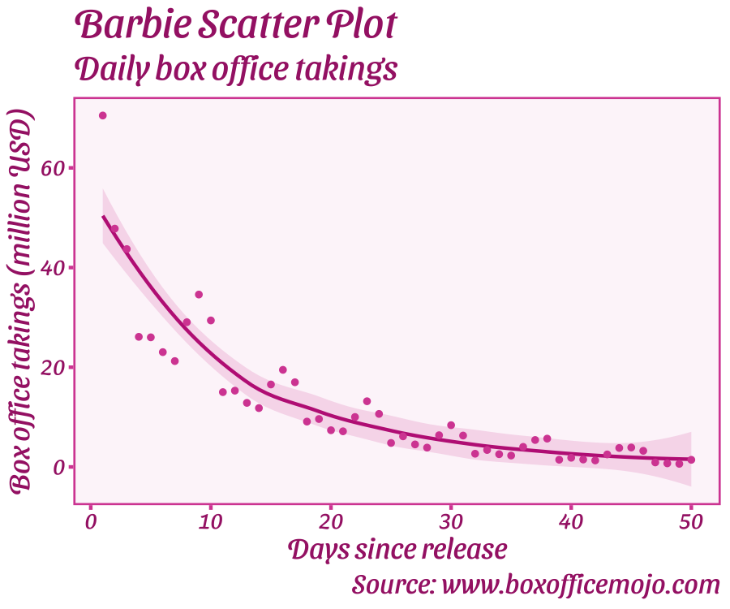

Welcome to the Theme Park
Theme Park is a package for fun ggplot themes related to popular culture (movies, TV shows, video-games, etc.). I don’t have much time to expand this further so please consider submitting a theme!
Submit a Theme
Please help grow this package by submitting your own custom ggplot theme for a movie, show, or videogame. To submit, edit the theme_template.R script file or run ThemePark:::new_theme_park_theme() and send the edited script to matthew.jane@uconn.edu or submit a pull request. I will review it and add it or respond with suggested edits. Have fun with it!
Themes contributed
| Name | Theme | Creator(s) |
|---|---|---|
| Barbie | theme_barbie() |
Matthew B. Jané |
| Oppenheimer | theme_oppenheimer() |
Matthew B. Jané & Toki Liam |
| Star Wars | theme_starwars() |
Matthew B. Jané |
| Zelda | theme_zelda() |
Alex Slavenko |
| Terminator | theme_terminator() |
Alex Slavenko |
| Spiderman | theme_spiderman() |
Velu P.K. Immonen |
| Avatar | theme_avatar() |
Velu P.K. Immonen |
| Gryffindor | theme_gryffindor() |
Begum Ozemek |
| Hufflepuff | theme_hufflepuff() |
Begum Ozemek |
| Ravenclaw | theme_ravenclaw() |
Begum Ozemek |
| Slytherin | theme_slytherin() |
Begum Ozemek |
| Futurama | theme_futurama() |
Tylor J. Harlow |
| Simpsons | theme_simpsons() |
Tylor J. Harlow |
| Lord of the Rings | theme_lordoftherings() |
Ethan Milne |
| Game of Thrones | theme_gameofthrones() |
Brennan Antone |
| Godfather | theme_godfather() |
Francisco Garre-Frutos |
| Finding Nemo | theme_nemo() |
Christopher T. Kenny |
| Friends | theme_friends() |
Alexis van STRAATEN |
| Alien | theme_alien() |
Luke Pilling |
| Grand Budapest Hotel | theme_grand_budapest |
Katya Kustova |
| Asteroid City | theme_asteroid_city |
Katya Kustova |
| French Dispatch | theme_french_dispatch |
Katya Kustova |
| Moonrise Kingdom | theme_moonrise_kingdom |
Katya Kustova |
Installation
You can install the development version of ThemePark from GitHub with:
# install.packages("remotes")
remotes::install_github("MatthewBJane/theme_park")Example
There are many theme options, listed above. You can see the list within your R session using:
library(ThemePark)
head(themepark_themes)
#> theme creator
#> 1 barbie Matthew B. Jané
#> 2 oppenheimer Matthew B. Jané & Toki Liam
#> 3 starwars Matthew B. Jané
#> 4 zelda Alex Slavenko
#> 5 terminator Alex Slavenko
#> 6 spiderman Velu P.K. ImmonenThe Barbie theme (theme_barbie()) has been one of the most popular themes from ThemePark. Use it with the included dataset barbie_box_office like below:
library(ggplot2)
# see suggested colours in the palette
barbie_theme_colors
#> text panel border lighter light medium
#> "#a62675ff" "#fdf6faff" "#d74ea2ff" "#f5d1e6ff" "#eeb4d7ff" "#d74ea2ff"
#> dark
#> "#bf2986ff"
# plot Box Office Takings (in million USD) over Days Since Release
ggplot(barbie_box_office |> dplyr::mutate(daily=daily/1000000),
aes(x = day, y = daily)) +
geom_smooth(method = 'loess',
color = barbie_theme_colors["dark"],
fill = barbie_theme_colors["light"]) +
geom_point(color = barbie_theme_colors["medium"]) +
labs(title = "Barbie Scatter Plot",
subtitle = "Daily box office takings",
caption = "Source: www.boxofficemojo.com",
x = "Days since release",
y = "Box office takings (million USD)") +
theme_barbie()
#> `geom_smooth()` using formula = 'y ~ x'
Below is an example of using the Game of Thrones theme.
# see suggested colours in the palette
gameofthrones_theme_colors
#> background text panel border lighter light medium
#> "#1f0700" "#D7B257" "#F2F3B8" "#BD6D33" "#F2F3B8" "#DFCB69" "#BD6D33"
#> dark
#> "#8C4522"
`X variable` <- rnorm(50, 0, 1)
`Y variable` <- rnorm(50, 0, 1)
ggplot(data = NULL, aes(x = `X variable`, y = `Y variable`)) +
theme_gameofthrones(gameofthrones_font = TRUE) +
geom_smooth(method = "lm",
color = gameofthrones_theme_colors["dark"],
fill = gameofthrones_theme_colors["light"]) +
geom_point(color = gameofthrones_theme_colors["medium"]) +
ggtitle("Game of Thrones Scatter Plot")
#> `geom_smooth()` using formula = 'y ~ x'We can mix this with colors from the Barbie theme.
g <- ggplot(mpg, aes(cty))
g + geom_density(fill = barbie_theme_colors["medium"]) +
labs(
title = "Density plot",
subtitle = "City Mileage",
caption = "Source: mpg",
x = "City Mileage"
) +
theme_gameofthrones()
ggplot(data = NULL, aes(x = `X variable`, y = `Y variable`)) +
theme_avatar(avatar_font = TRUE) +
geom_smooth(method = "lm", color = avatar_theme_colors["dark"], fill = avatar_theme_colors["light"]) +
geom_point(color = avatar_theme_colors["medium"]) +
ggtitle("Avatar Scatter Plot")
#> `geom_smooth()` using formula = 'y ~ x'
ggplot(data.frame(x = rnorm(100), y = rnorm(100)), aes(x, y)) +
geom_smooth(method = "lm", color = godfather_theme_colors["dark"], fill = godfather_theme_colors["light"]) +
geom_point(color = godfather_theme_colors["medium"]) +
labs(title = "The Godfather theme", x = "Variable x", y = "Variable y") +
theme_godfather(godfather_font = TRUE)
#> `geom_smooth()` using formula = 'y ~ x'Citation
BibTeX:
@software{JaneBarbie2023,
author = {Jané, Matthew B. and Pilling, Luke C. and Kenny, Christopher T.},
month = {6},
title = {theme_park: popular culture ggplot themes},
url = {https://github.com/MatthewBJane/theme_park},
version = {0.0.9},
year = {2023}
}APA:
Jané, M.B., Pilling, Luke C., & Kenny, Christopher T. (2023). theme_park: popular culture ggplot themes (Version 0.0.9) [Source Code]. https://github.com/MatthewBJane/theme_park